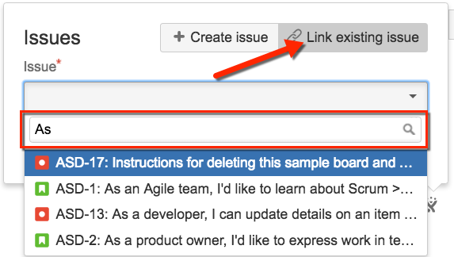
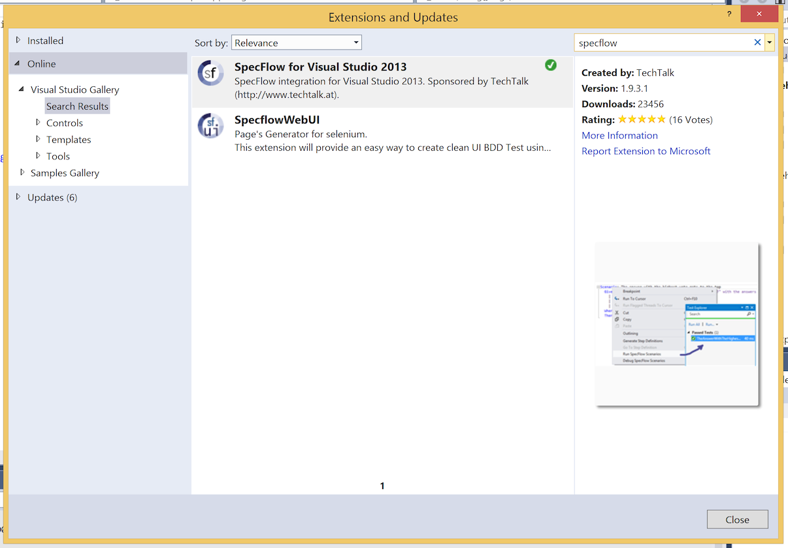
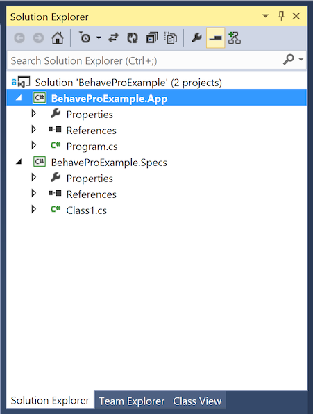
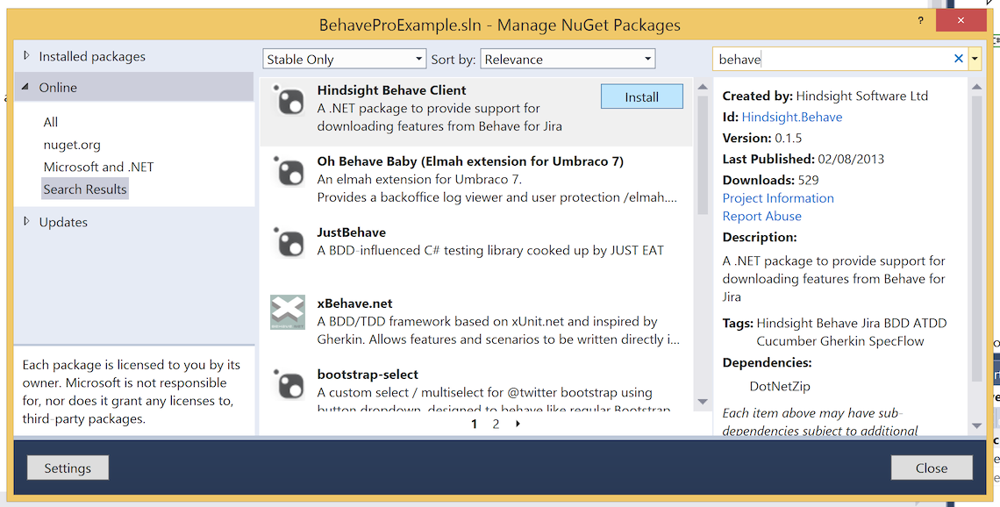

Using Behave Pro
This section contains articles that describe how to use Behave Pro features within JIRA. Use the menu at the left, or click one of the links below.
Add a Scenario to a JIRA Issue
In JIRA, developers will use an issue to manage a user story or software requirement. Consider an example requirement for inventory management, in which a store manager wants any item that arrives as a result of a refund or an exchange to be put back into stock.
“Refunded or exchanged items should be returned to stock.”
At right, we show the JIRA issue that represents this requirement.A scenario is an example that clearly elucidates the requirements. The Behave Pro plugin adds features to JIRA so that team members can associate one or more scenarios with a JIRA issue.

Often, it’s best to have two or more examples.Here is are the steps for one scenario that complements the JIRA issue above:
Given a customer previously bought a black sweater
And I currently have three black sweaters left in stock
When the customer returns the sweater for a refund
Then I should have four black sweaters in stock
Below the Description, in the Acceptance Criteria of the JIRA Issue page, you’ll find the + Add Scenarios button. Click that button to add a scenario, then enter the Feature name, Scenario title and the Steps. When the scenario is complete, click the Create Scenario button. See the figure to the right.
For illustration, here is another scenario that you could add to this issue:
Given that a customer buys a blue garment
And I have two blue garments in stock
And I have three black garments in stock
When he returns the garment for a replacement in black
Then I should have three blue garments in stock
And two black garments in stock
Link a Scenario to a JIRA Issue
You can link an existing scenario to an issue, so that any modifications to that scenario will generate an email notification explaining the content of the change and the user who made the change. To link a scenario to an issue, follow the steps below.
- Navigate to the Specification page an, on the left, choose a scenario that you want to link to a specific issue.
- Click the small JIRA icon adjacent to the Scenario heading.

- A pop-up window will appear, similar to the figure below. Click the Link existing issue button. 
- In the text box, begin typing to search your issue list. When the issue is found click the Link button to establish the link.
Status Mapping
Test Automation
Once you have written your Scenarios inside JIRA, you can pull them to your development environment using one of our clients. We currently have clients for Maven and Gradle with Java, the .NET platform, Python and Ruby.
Java with Maven
The first step is to add the Hindsight Software Maven repository to your projects Maven pom file.
<pluginRepositories>
<pluginRepository>
<snapshots>
<enabled>false</enabled>
</snapshots>
<id>hindsighttesting.release</id>
<name>Hindsight Software Release Repository</name>
<url>http://repo.hindsightsoftware.com/public-maven</url>
</pluginRepository>
</pluginRepositories>
Next, the plugin declaration can be added to the pom file. The plugin has 4 required parameters: “server” which is the url to your JIRA Server instance and “projectKey” which is the key of the ID of the project you want to generate acceptance tests for, “username” the User ID for accessing Behave Pro and “password” the API Key for authenticating the User ID and Project ID’s.
<plugin>
<groupId>com.hindsighttesting.behave</groupId>
<artifactId>behave-maven-plugin</artifactId>
<version>1.0.4</version>
<configuration>
<server>https://behave.pro</server>
<projectKey>10100</projectKey>
<username>REPLACE WITH YOUR JIRA USERNAME</username>
<password>REPLACE WITH YOUR JIRA PASSWORD</password>
</configuration>
<executions>
<execution>
<goals>
<goal>features</goal>
</goals>
</execution>
</executions>
</plugin>
Configuring Cucumber
The first step is to add the cucumber dependencies to the maven project. We will be using Cucumber’s JUnit runner to run our tests so JUnit will also be a dependency.
<dependencies>
...
<dependency>
<groupId>info.cukes</groupId>
<artifactId>cucumber-picocontainer</artifactId>
<version>1.0.10</version>
<scope>test</scope>
</dependency>
<dependency>
<groupId>org.picocontainer</groupId>
<artifactId>picocontainer</artifactId>
<version>2.14.1</version>
</dependency>
<dependency>
<groupId>info.cukes</groupId>
<artifactId>cucumber-junit</artifactId>
<version>1.0.10</version>
<scope>test</scope>
</dependency>
<dependency>
<groupId>junit</groupId>
<artifactId>junit</artifactId>
<version>4.10</version>
<scope>test</scope>
</dependency>
...
</dependencies>
Create a java class called “CucumberIT” in the “src/test/java” folder of your maven project. Annotate this class with the following annotations.
import org.junit.runner.RunWith;
import cucumber.junit.Cucumber;
@RunWith(Cucumber.class)
@Cucumber.Options(format = { "json", "json:target/cucumber.json" }, features = { "target/generated-test-sources/" }, strict = true)
public class CucumberIT {
}
These annotations turn a standard JUnit test into a cucumber test which loads and executes the scenarios from JIRA (The behave-maven-plugin generates these). To run this JUnit/Cucumber test during the Maven integration-test phase you need to add the maven failsafe plugin.
<plugin>
<groupId>org.apache.maven.plugins</groupId>
<artifactId>maven-failsafe-plugin</artifactId>
<version>2.12</version>
<executions>
<execution>
<id>integration-test</id>
<goals>
<goal>integration-test</goal>
<goal>verify</goal>
</goals>
</execution>
</executions>
</plugin>
When you put this all together and run it using “mvn verify” the acceptance tests are extracted from JIRA and run by cucumber. From the output of Maven you can see the tests failed. They failed because Cucumber is trying to match each step in your Scenario with a method in Java and could find any matches. If it finds a matching method it will execute it or it fails the scenario (Test) and skip over the remaining steps in the scenario. All that is left to do is implement the cucumber step definitions. When Cucumber can’t find a matching method to a step it will generate a code snippet for you to copy into your code and implement. In the console before the test results you will see code snippets for all the steps. All that is left to do is implement the cucumber step definitions by creating a new Java class in our project and copy ‘n’ paste the snippets
Java with Gradle
The Gradle task can be installed automatically by configuring your Gradle scripts to fetch the task and its dependencies using standard Maven resolution.
buildscript {
repositories {
maven { url 'http://repo.hindsightsoftware.com/public-maven' }
mavenCentral()
}
dependencies {
classpath group: 'com.hindsighttesting.behave', name: 'behave-gradle-task', version: '1.0.0-1'
}
}
The above script will automatically download the task from the Hindsight Maven repository, and make it available to the buildScript of your projects.
Configuration
Adding a task to download Acceptance Tests from Behave
To download the Acceptance Tests (Feature files) you need to create a task implementing “com.hindsighttesting.behave.gradle.FeaturesTask”. This type has been added by the automatic installation described above.
task behavefeatures(type: com.hindsighttesting.behave.gradle.FeaturesTask) {
projectKey = '10100'
server = 'https://behave.pro'
username = 'REPLACE WITH YOUR JIRA USERNAME'
password = 'REPLACE WITH YOUR JIRA PASSWORD'
destinationDir = 'build/generated-test-sources/cucumber'
}
Configuring Cucumber
Don’t forget to execute the Behave Download Task before executing Cucumber, or you won’t have any tests to execute. This can be simply done by adding a dependency from your Cucumber task to the Behave Task.
dependsOn assemble, behavefeatures
Also you will need to tell Cucumber where to find the Acceptance Tests (Feature files) you have downloaded (The “destinationDir” property in the Behave Task)
args = ['-f', 'pretty', '--glue', 'build/classes/test', 'build/generated-test-sources/cucumber']
Ruby
You have two options for working Behave, Cucumber and Ruby: 1. The command line client 2. Rake build scripts Both require the Behave gem to be installed
Installing the Behave gem
The gem is hosted on RubyGems at https://rubygems.org/gems/behave and is available direct from the website or using RubyGems. Assuming you have Ruby and RubyGems installed on your system, run
$ gem install behave
and you will have installed the behave ruby client and its dependencies. Depending on your system, you may have to prefix the command with “sudo”
Using the command line
Installing the gem will have placed a binary on your path named “behave”. The output of “behave –help” is as follows:
Usage: behave [options]
Specific options:
-h, --host HOST Host URI for JIRA installation - This should be https://behave.pro
-u, --user USER User ID from the JIRA Project Admin Page
-p, --pass PASS API Key from the JIRA Project Admin Page
-k, --key KEY Project ID from the JIRA Project Admin Page
-d, --directory [DIR] Specify output directory (default 'features')
-m, --manual Include manual tagged scenarios in download
--proxy PROXY_URL Pass requests through a PROXY_URL
--bypass-ssl Bypass SSL certificate checking
--help Show this message
--version Show version
An example call could look like this:
$ behave --host https://behave.pro \
--user "REPLACE WITH YOUR JIRA USERNAME" \
--pass "REPLACE WITH YOUR JIRA PASSWORD" \
--key 10100 \
--directory features \
--manual
This would download all .feature files from the PROJ project to the features directory (relative to the directory behave was run from), including all scenarios tagged as manual. Host and Key are the only required arguments, which defaults to an anonymous login downloading all features to the directory the command is run from.
Rake
You are more than likely to be using Rake in your Ruby project for scripting your builds. Cucumber comes with its own Rake task ready for you to use and looks like this
require 'cucumber/rake/task'
Cucumber::Rake::Task.new(:features) do |t|
t.cucumber_opts = "--format pretty"
end
This cucumber task can be executed using the following command
$ rake features
As our Features and Scenarios are stored within JIRA we will need to download them. To do this we will add a new Rake task that will download them using the “Behave” Ruby gem.
require 'behave'
desc "Download features"
task :download do
Behave::FeatureDownloader.new({
'host' => 'https://behave.pro',
'user' => 'REPLACE WITH YOUR JIRA USERNAME',
'pass' => 'REPLACE WITH YOUR JIRA PASSWORD',
'key' => 10100,
'dir' => 'features',
'manual' => true
})
end
This task can be executed using the following command
$ rake download
We can now download our Features and Scenarios from JIRA but we will always have to remember to run “rake download” before “rake features”. To avoid this we can configure the Cucumber “features” task to depend on the Behave “download” task and execute it before running Cucumber. This just requires one additional line in your rake file.
task :features => :download
The full Rakefile can be found in the example project on Bitbucket
Proxy
If you need to specify a proxy to pass requests through, use the –proxy flag from the command line or pass 'proxy’ => 'MY_PROXY’ argument into FeatureDownloader i.e.
$ behave --host https://behave.pro \
--proxy https://some.proxy.url
or
task :download do
Behave::FeatureDownloader.new({
...
'proxy' => 'http://some.proxy.url'
...
})
end
Bypassing SSL
If you experience problems with your SSL certificate, you can bypass SSL checking in behave by using the –bypass-ssl command line flag, or the 'bypass_ssl’ => true FeatureDownloader argument.
.NET
The Gherkin-compatible BDD tool that is generally used with .NET is SpecFlow. We host our .NET client on the NuGet gallery, and it is available through the NuGet Packet Manager Shell:
PM> Install-Package Hindsight.Behave
Alternatively, you can use the built in NuGet Gallery interface from inside Visual Studio 2010/12
Using within a script
You can use the JIRA Connector within your own scripts to download features from Behave:
Using Hindsight.Behave;
public class Demo
{
public void Download()
{
JiraConnector jc = new JiraConnector("https://behave.pro");
jc.Fetch(
// The project id of the target project
project: "10100",
// The API Key username
username: "REPLACE WITH YOUR JIRA USERNAME",
// The API Key value
password: "REPLACE WITH YOUR JIRA PASSWORD",
// Directory to extract features to (relative to script)
directory: "features",
// Boolean whether to include manual tests
manual: true,
// Boolean whether to verify the SSH certificate
verify: true,
// Boolean whether to return feature files that
// are compatible with NUnit.
isNUnit: true
)
}
}
This will download all features from project ID 10100 into the features director, including manual tagged scenarios.
Using with MSBuild
You can use the Behave assembly as an MSBuild task as part of your build process. You can modify the build process for a project by “unloading” it in Visual Studio (right click the project in the solution explorer and click “Unload Project”) and then right clicking and clicking “Edit {PROJECT}.csproj”, or editing the .csproj file directly in the directory for the project. Create a new reference to the Behave.dll assembly, which will be in your project after using NuGet to install it:
<UsingTask
TaskName="Behave"
AssemblyFile="path\to\the\Behave.dll" />
You can then use the Behave task to fetch features, either in one of the existing BeforeBuild or AfterBuild target blocks, or by defining your own as we have below:
<Target Name="Test">
<Behave
host="https://behave.pro"
project="10900"
username="REPLACE WITH YOUR JIRA USERNAME"
password="REPLACE WITH YOUR JIRA PASSWORD"
directory="Features\"
manual="true" />
</Target>
Step by Step with Visual Studio 2013
This guide will take you from a new solution through to integrating Behave Pro with SpecFlow, and running the feature files.
Visual Studio setup
Install SpecFlow for Visual Studio 2013 from the Extensions and Updates dialog in the Tools menu, and restart Visual Studio when prompted.

Project setup
Create a new solution, containing a project for the Application and a project for the Specs (download the prepared solution file here).

Install the Hindsight.Behave, SpecFlow, SpecFlow.NUnit, NUnit, NUnit.Runners and NUnitTestAdapter into your solution, using the NuGet Package Manager from the Tools menu.

Configuring MSBuild task
Unload the Specs project, in order to edit the .csproj file (which is the MSBuild configuration used to build that particular project)
next
require 'kittn'
api = Kittn::APIClient.authorize!('meowmeowmeow')
import kittn
api = kittn.authorize('meowmeowmeow')
# With shell, you can just pass the correct header with each request
curl "api_endpoint_here"
-H "Authorization: meowmeowmeow"
const kittn = require('kittn');
let api = kittn.authorize('meowmeowmeow');
Make sure to replace
meowmeowmeowwith your API key.
Kittn uses API keys to allow access to the API. You can register a new Kittn API key at our developer portal.
Kittn expects for the API key to be included in all API requests to the server in a header that looks like the following:
Authorization: meowmeowmeow
Kittens
Get All Kittens
require 'kittn'
api = Kittn::APIClient.authorize!('meowmeowmeow')
api.kittens.get
import kittn
api = kittn.authorize('meowmeowmeow')
api.kittens.get()
curl "http://example.com/api/kittens"
-H "Authorization: meowmeowmeow"
const kittn = require('kittn');
let api = kittn.authorize('meowmeowmeow');
let kittens = api.kittens.get();
The above command returns JSON structured like this:
[
{
"id": 1,
"name": "Fluffums",
"breed": "calico",
"fluffiness": 6,
"cuteness": 7
},
{
"id": 2,
"name": "Max",
"breed": "unknown",
"fluffiness": 5,
"cuteness": 10
}
]
This endpoint retrieves all kittens.
HTTP Request
GET http://example.com/api/kittens
Query Parameters
| Parameter | Default | Description |
|---|---|---|
| include_cats | false | If set to true, the result will also include cats. |
| available | true | If set to false, the result will include kittens that have already been adopted. |
Get a Specific Kitten
require 'kittn'
api = Kittn::APIClient.authorize!('meowmeowmeow')
api.kittens.get(2)
import kittn
api = kittn.authorize('meowmeowmeow')
api.kittens.get(2)
curl "http://example.com/api/kittens/2"
-H "Authorization: meowmeowmeow"
const kittn = require('kittn');
let api = kittn.authorize('meowmeowmeow');
let max = api.kittens.get(2);
The above command returns JSON structured like this:
{
"id": 2,
"name": "Max",
"breed": "unknown",
"fluffiness": 5,
"cuteness": 10
}
This endpoint retrieves a specific kitten.
HTTP Request
GET http://example.com/kittens/<ID>
URL Parameters
| Parameter | Description |
|---|---|
| ID | The ID of the kitten to retrieve |
Errors
The Kittn API uses the following error codes:
| Error Code | Meaning |
|---|---|
| 400 | Bad Request – Your request sucks |
| 401 | Unauthorized – Your API key is wrong |
| 403 | Forbidden – The kitten requested is hidden for administrators only |
| 404 | Not Found – The specified kitten could not be found |
| 405 | Method Not Allowed – You tried to access a kitten with an invalid method |
| 406 | Not Acceptable – You requested a format that isn’t json |
| 410 | Gone – The kitten requested has been removed from our servers |
| 418 | I’m a teapot |
| 429 | Too Many Requests – You’re requesting too many kittens! Slow down! |
| 500 | Internal Server Error – We had a problem with our server. Try again later. |
| 503 | Service Unavailable – We’re temporarially offline for maintanance. Please try again later. |